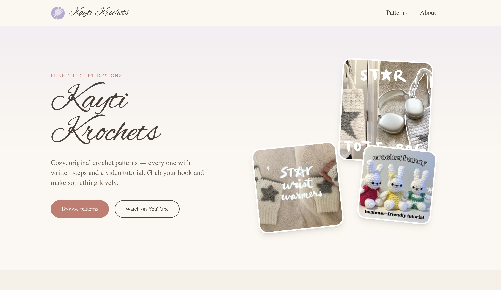
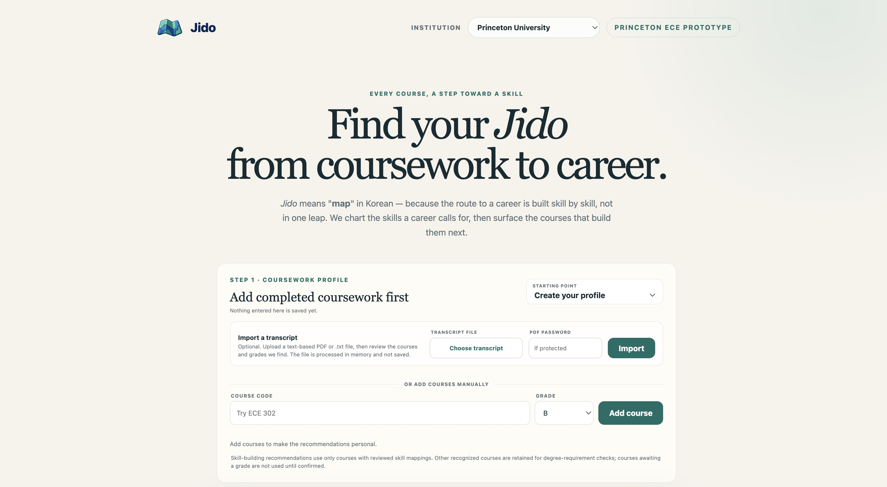
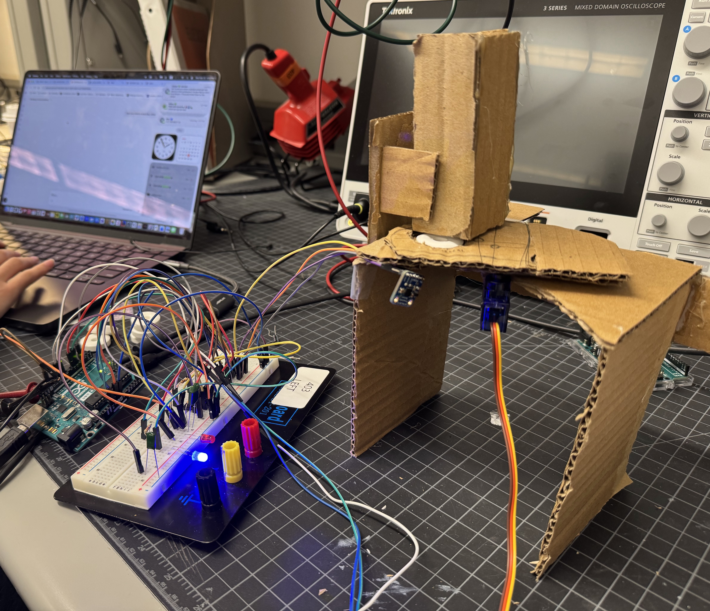
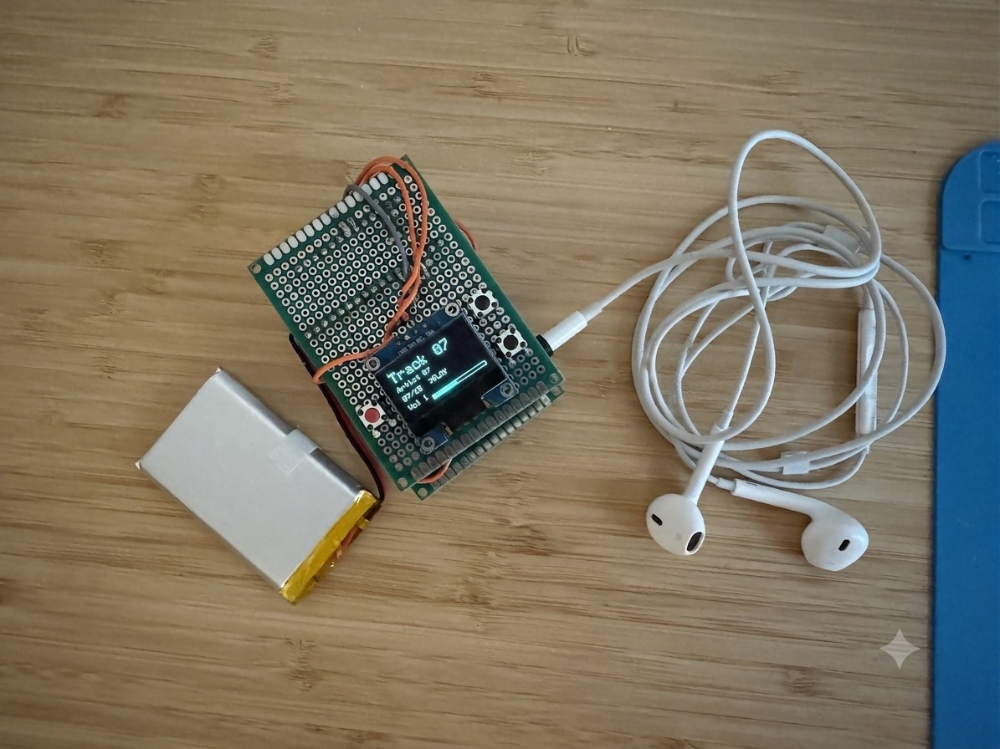

projects
A mix of software and hardware — from an AI-assisted course planner to a crochet pattern database to small embedded builds that react when you walk by.

Crochet pattern database to accompany YouTube channel with 68K+ subscribers. 200+ monthly visitors.

A course-recommendation tool that maps coursework to career-relevant skills, built for Stellic's Pathfinder Challenge.

A touchless dispenser that fires a servo when a VCNL4010 proximity sensor detects a hand, with an NE555 hardware timer handling the cooldown.

A battery-powered MP3 player with a true hardware power switch, built around an Arduino Nano and DFPlayer Mini.